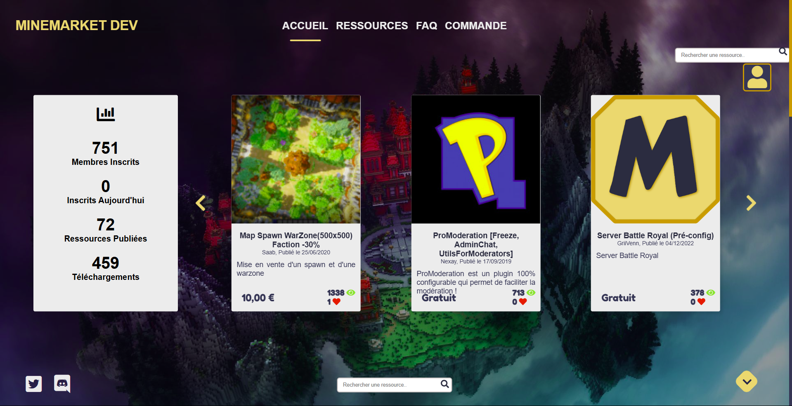

MineMarket
MineMarket est une plateforme d'achat et de vente de mods et
de plugins du jeu Minecraft. Je travaille sur ce projet avec
un ami, lui s'occupe du backend, et moi du frontend. Nous
avons racheté ce projet qui n'était plus actif depuis
plusieurs années. Notre but est de le restaurer, le réparer
et de le modifier à notre image. Pour le frontend, j'utilise
majoritairement
 HTML,
HTML,
 SASS
et
SASS
et
 JavaScript.
JavaScript.
Il peut également m'arriver d'utiliser
 PHP.
PHP.
Ce projet nous a posé plusieurs difficultés, et je pense notamment au niveau du backend. En effet, n'étant plus actif, les librairies n'étaient plus à jour depuis plusieurs années, ce qui causait beaucoup de bugs. Un petit peu moins grave, mais le design d'origin du site faisait ancien, il ne suivait pas les tendances récentes. De plus, quelques fonctionnalités fonctionnaient étrangement, ou de manière non intuitives.
Je suis donc personnellement en train de faire une refonte visuelle du site, en utilisant les technologies utilisées par les anciens développeurs. La page d'accueil est bientôt finie et fonctionnelle, mais il restera ensuite la page des ressources, de profile, etc... Je fais de mon mieux pour rendre l'experience utilisateur la plus agréable possible.
Au départ, ce fut un véritable challenge pour moi de me lancer dans ce projet. Je ne pensais aucunement que cela me prendrait autant de temps. Le plus dur selon moi n'était pas de s'adapter aux technologies utilisées, mais de comprendre comment le site a été fait. À partir du moment où j'ai su où se trouvaient les fichiers dont j'ai besoin, j'ai enfin pu commencer à développer plus efficacement. D'autant plus qu'il n'y avait pas de commentaires dans les différents fichiers que j'ai repris.
Avec mon ami, nous avons beaucoup d'ambitions sur ce projet. Nous avons déjà réfléchi à ce que l'on pourrait rajouter pour rendre l'experience utilisateur meilleure, quels autres types de produits ils pourraient mettre en vente sur notre site, et pleins d'autres choses. Cependant, il reste encore du travail pour rendre le site utilisable, mais nous serons très ravis lorsque notre site pourra enfin être ouvert au public